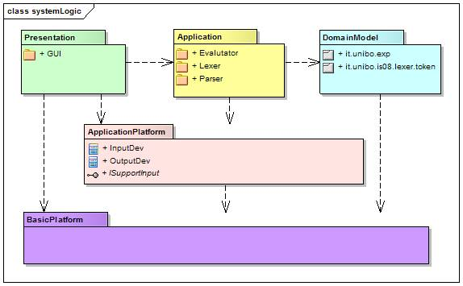
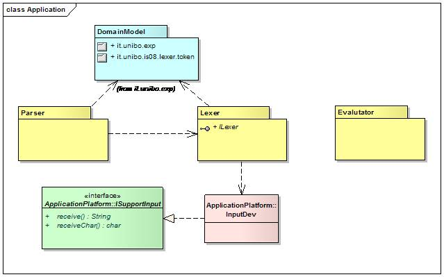

L'analisi del problema è fortunatamente nota, essendo il concetto di espressione
aritmetica oggetto dello studio della matematica e dell'informatica teorica.
Per quanto riguarda il processo di costruzione del software,
ricordiamo che obiettivi fondamentali dell'analisi sono:
Un sistema per il riconoscimento e la valutazione di espressioni aritmetiche
può essere basato sulla architettura
logica rappresentata nella figura che segue:
Architettura logica
Figura 1. Architettura Logica del sistema
Questo diagramma strutturale dice che l'analista ha:
- Riconosciuto il fatto che il sistema richiede la definizione di tre sottosistemi
(three tier):
- il sottosistema che definisce il modello dei dati del dominio.
- il sottosistema di presentazione
che si occupa della interazione (in ingresso e in uscita)
con l'utente (interfaccia grafica);
- il sottosistema di elaborazione che realizza le attività che
danno valore all'applicazione (riconoscimento e valutazione di frasi).
Questo sottosistema comprende anche entità
capaci di configurare (configurator)
il sistema e di gestire le interazioni (controller) tra il sottosistema di
presentazione e quello di elaborazione.
- La separazione delle attività interne di elaborazione
dai dispositivi di I/O.
-
L'articolazione del sottosistema di riconoscimento e valutazione
in tre parti: analizzatore lessicale (Lexer) analizzatore sintattico
(Parser) e uno o più valutatori (Evaluator).
Naturalmente questa architettura va intesa come una prima
decomposizione del sistema, legata ai requisiti funzionali
e non funzionali che si vogliono raggiungere.
Essa lascia ancora indefinite molte parti, quali
ad esempio l'effettivo rappporto tra Lexer, Parser
ed Evaluator
tra il controller e gli altri componenti, etc..
Per quanto riguarda il sottosistema applicativo,
l'analista può osservare che la frase da riconoscere
e valutare può essere resa disponibile in diverse forme:
su file, come stream di dati via rete, come campo di un database, etc.
Per evitare dipendenze dirette da queste diverse tecnologie di supporto
alle frasi, l'analista
indica come opportuno pensare alla frase da analizzare come
il contenuto informativo di un
dispositivo logico di ingresso capace di permettere l'accesso sequenziale
ai singoli caratteri. Questo dispositivo deve essere logicamente
reso disponibile al
Lexer attraverso un'interfaccia quale ad esempio:
public interface ISupportInput {
public String receive() throws Exception;
public char receiveChar() throws Exception;
}
Sulla base di queste considerazioni la parte strutturale
dell'architettura logica della parte applicativa può essere rappresentata
come segue:
Figura 2. Architettura Logica della parte applicativa

L'analista ha detto che, sul piano logico, il
Parser dipende dal Lexer; per essere più precisi
ha detto qualcosa del tipo: il (sottosistema) Parser
deve avvelersi di informazioni prodotte dal (sottosistema)
Lexer. Non ha detto in alcun modo che, per ottenere
queste informazioni, il (sottosistema) Parser deve "chiamare"
(una operazione de) il Lexer; l'informazione potrebbe essere anche
"iniettata" dal Lexer (o da altro sottosistema) entro il Parser.
Per quanto riguarda la parte di valutazione delle espressioni
L'analista può osservare che un valutatore
può essere posto in esecuzione in due modi diversi:
- procedendo passo-passo sotto la guida del Parser;
- agendo, al termine della attività del Parser,
sull'APT da questi prodotto.
La figura mostra che l'analista non pone vincoli in merito
a questo punto.